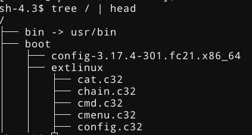
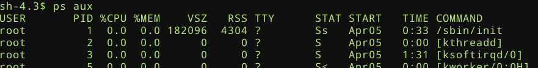
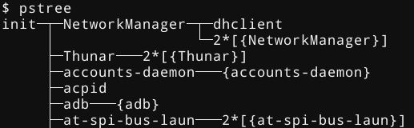
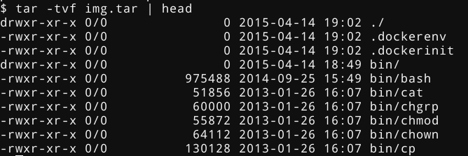
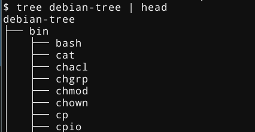

Docker Without Docker
Recurse Center
16 April 2015
Some common questions
- What is Docker? Do I really need it?
- How does Docker actually work?
- How can I set up a single dev environment to work on any computer?
- My code works on my computer. Now how do I put it on a production server?
- Can't I just write code and have it "just work" everywhere?
- Package managers suck. What's a better way?
- Can I make my virtual machine run faster?
- Is it possible to run Docker containers without even running Docker?
Wouldn't it be nice if
- We could use
git to manage an entire server or desktop?
- We could provision/deprovision an entire machine with a single command?
Why not virtualize
- Performance
- Interoperability (inter-communication)
What is an operating system ("distro")?
- At its core, your OS is just a bunch of files
- Along with an
/sbin/init file
- Different distributions distribute different files
That's basically it.

Inspecting processes


But what's actually in /sbin/init?
- There is nothing particularly special about what goes here!
- ...But it's almost always the same thing
sysvinit (1983 - ~2010)systemd (2010 - ?)
Within 9 days, all of the top 10 Linux distributions will use systemd by default, or descend from one that does.
What tools does systemd provide?
systemctl (system management, daemonization, etc.)journactl (logging)systemd-analyze (system profiling)machinectl (machine management)
These are all already available on any machine using systemd
How do you create a distribution from scratch?
0. Create a directory that represents the new root directory (ie, "/")
1. Move all the right files there, either manually, or with a tool like deboostrap, pacstrap, yum, etc.)
2) Tar your directory and ship it
Congratulations! This directory is a pseudo-snapshot of your new distro!
Where does Docker come in?
- Docker can also create these 'snapshots', using a
Dockerfile
FROM debian:wheezy
MAINTAINER Aditya Mukerjee <dev@chimeracoder.net>
RUN apt-get update
RUN apt-get install -y procps psmisc
CMD ["/bin/bash"]
Build and run:
$ docker build -t bashtest .
$ docker run -it bashtest
(as with Git hashes, you can use the container ID or a prefix instead of the name)
- Question: What runs as PID 1?
Dissecting the Dockerfile
FROM debian:wheezy
MAINTAINER Aditya Mukerjee <dev@chimeracoder.net>
RUN apt-get update
RUN apt-get install -y procps psmisc
CMD ["/bin/bash"]
$ docker ps
$ docker exec <container> ps aux
Can I access this 'snapshot'?
$ docker export <container-hash> > img.tar
Let's inspect that:
$ mkdir ~/bashtestcontainer
$ tar -C ~/bashtestcontainer -xvf img.tar
What's inside the tarfile?

Does this look familiar?
Can I do this without Docker?
$ mkdir debian-tree
$ debootstrap --arch=amd64 unstable debian-tree

Does this look familiar?
How do we run the Debian image, though?
- The systemd-nspawn command runs a command or OS in a lightweight namespace container
- "In many ways it is similar to chroot(1), but more powerful since it fully virtualizes the file system hierarchy, as well as the process tree, the various IPC subsystems and the host and domain name."
Let's try this out
$ systemd-nspawn -D debian-tree/ /bin/echo "hello, outside world!"
$ systemd-nspawn -D debian-tree/ /bin/bash
$ systemd-nspawn -D debian-tree/ /sbin/init
We can manage our containers with machinectl
$ machinectl list
$ machinectl status debian-tree
$ machinectl reboot debian-tree
$ machinectl poweroff debian-tree
Note that these are analogous to
$ systemctl reboot
$ systemctl poweroff
which we use for managing our systemd (host) servers
But all this has to be on our local machine, right?
$ machinectl -H foo@example.com
$ machinectl -H foo@example.com:debian-tree
Daemons, services, and units
Daemonizing, the old way:
- Write a shell script
- Implementing each target
- Which executes sequentially with others
- Make sure your program remembers to fork twice, not just once!
- Oh, but hopefully it didn't call setuid
- Which file is the PID written in again?
- But wait, did the PID get reused?
All in all, it requires fifteen different steps, with serious consequences for even small mistakes
Really?
- Yes, and that's just for one daemon.
- Also, "Process monitoring? What's that?"
Daemonizing, the new way:
- Write a single
.service file for your program.
[Service]
ExecStart=/usr/bin/foobard
[Install]
WantedBy=multi-user.target
No fork. No pain.
Daemonizing containers
$ mv ~/debian-tree /var/lib/container/debian-tree
$ systemctl start systemd-nspawn@debian-tree.service # start now
$ systemctl enable systemd-nspawn@debian-tree.service # autostart on boot
How do we get logs?
- Easy. On the host, we normally view logs by executing:
- If we have a container running on the host, we can do:
$ journalctl -M debian-tree
What about profiling?
Same thing.
$ systemd-analyze -M debian-tree # list startup time
$ systemd-analyze blame -M debian-tree # break down the boot time per-unit
But what about networking?
Networking just works
- The defaults are probably what you want
- But you can also configure specific network interfaces, network bridges,
macvlan, and more
- Docker doesn't let you do this (...or so a lot of people think!)
How can I control resources for a container?
cgroups (control groups) are a kernel feature for managing resources for a single process or collection of processes, such as:
- Limiting memory/CPU usage
- Limiting I/O access
- Prioritizing important tasks over others
- etc.
Is this all specific to systemd, or can I use Docker?
$ systemd-nspawn --machine bashtest --directory ~/bashtestcontainer /bin/bash
or even:
$ machinectl pull-dkr chimeracoder/nginx-nspawn --dkr-index-url https://index.docker.io
Wait.
what?!
Remember what we said at the beginning
- At its core, your OS is just a bunch of files
- Along with an /sbin/init file
- Different distributions distribute different files
- That's basically it.
Containers let you virtualize parts of your OS, without requiring you to virtualize the whole OS.
Containers let you virtualize the filesystem, the process tree, the network stack,`/proc`, /sys, and more selectively.
So why use Docker at all?
- For many use cases, it may not matter one way or the other
- Docker is not the only containerization tool around, but it is probably the most popular
- Docker has a healthy ecosystem (the container equivalent of "package support")
- Try it yourself both ways. As you can see, it's easy to switch back and forth
Try it yourself!
Some cool things you can do with systemd-nspawn:
- "Execute this command on my root filesystem, but roll back any changes at the end"
- "Run nginx inside its own container on boot, but limit it to 512 MB of RAM and 200% CPU"
- "Give me a container that has its own private network and its own IP and MAC addresses, but map certain ports on the host to the container"
- "Run this container with its own daemons in it, and monitor them to make sure they don't fail"
- "Download this container from the Docker Hub and run it every time I boot, but without installing Docker"